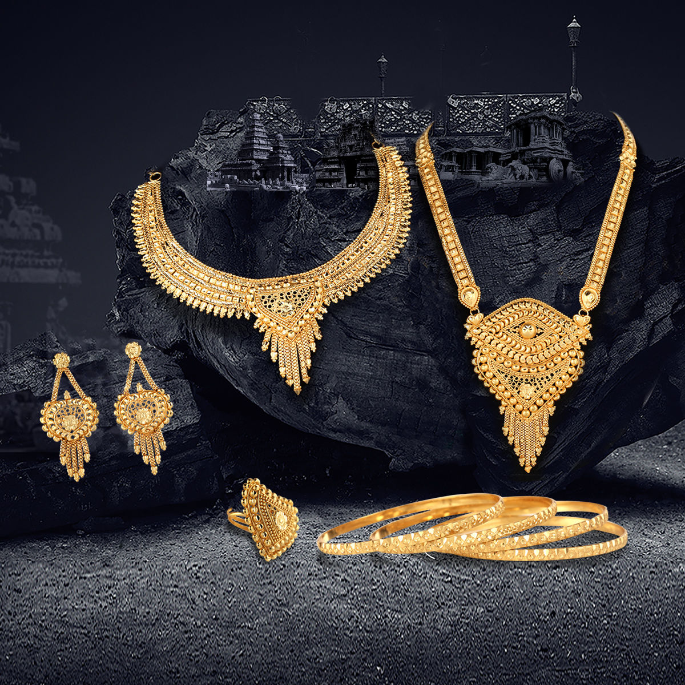

Blogs
Understanding the Value of Your Gold: A Comprehensive Analysis
Introduction
Gold has been a symbol of wealth and prosperity for centuries,
captivating the human imagination and serving as a timeless
investment. In recent times, the phrase
‘We Buy Gold’ has become ubiquitous, inviting
individuals to sell their gold for cash. However, before you part
with your precious metal, it’s crucial to understand the value of
your gold through a comprehensive analysis.
The Basics of Gold Valuation
Gold is valued based on its weight and purity. The standard
measurement for gold is in troy ounces, and purity is expressed in
karats. Pure gold is 24 karats, while jewelry is typically crafted
using 14 or 18 karats. The higher the karat, the more valuable the
gold.
Factors Influencing Gold Prices Several factors influence the price
of gold in the market, and staying informed about these can help you
make more informed decisions when selling your gold.
Market Demand and Supply: Like any other commodity,
gold prices are affected by supply and demand dynamics. Economic
uncertainty, geopolitical events, and inflation can drive demand for
gold as a safe-haven asset.
Central Bank Policies: Actions taken by central banks, such as changes in interest rates or monetary policy, can influence gold prices. A low-interest-rate environment may drive investors towards gold as an alternative investment.
Currency Strength: Since gold is priced in U.S. dollars, fluctuations in currency values can impact its price. A weaker dollar typically leads to higher gold prices.
Understanding ‘We Buy Gold’ Services
When you see signs advertising ‘We Buy Gold,’ it’s important to approach such services with caution and conduct thorough research before selling your gold.
Verification of Purity and Weight: Reputable gold buyers will carefully assess the purity and weight of your gold using precise scales and advanced testing methods. Be wary of buyers who don’t provide transparent evaluations.
Customer Reviews and Reputation: Research the reputation of the gold buyer by checking customer reviews, testimonials, and any available online ratings. A trustworthy buyer will have a positive track record and clear communication about their valuation process.
Transparent Transactions: Choose a buyer who is transparent about the evaluation process and willing to explain how they determine the value of your gold. Avoid services that seem secretive or rush through the assessment.